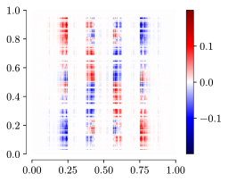
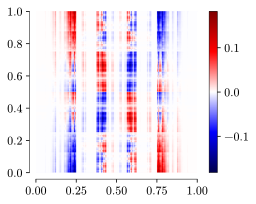
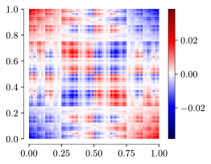

Appendix B — Binned sampling of populations and visualization of kernels
B.1 Mean field derivation
Let us start by taking \(N\) samples of the distribution \(\rho(z_1, z_2)\). As established in Section 2.2.1, this defines a network of neurons \(i \in \{1,\cdots,N\}\) with connectivity matrix \(J_{ij} = w_U(\boldsymbol{v_i}, \boldsymbol{v_j})\). We recall the evolution equation for the network of neurons:
\[ \dot h_i(t) = -h_i(t) + \sum_{j=1}^N J_{ij} \phi(h_j(t)). \tag{B.1}\]
For now, we do not use the fact that in our setting, \(J_{ij}\) is low-rank. Applying the finite-\(n\) mapping \(S^n\),1 the neurons \(\mathcal{A}= \{i_1, \cdots, i_{|\mathcal{A}|}\}\) will end up in the same 1D bin at position \(\alpha\). We stress that \(|\mathcal{A}| \neq 2^n\) in general, because we sample the distribution, instead of applying a grid. There are, however, still \(4^n\) 1D bins, each of length \(4^{-n}\).
As explained in the main text, we average the segment together in a bin, and we write the corresponding potential of the segment population at location \(\alpha\):
\[ H_\alpha(t) = \frac{1}{|\mathcal{A}|} \sum_{i \in \mathcal{A}} h_i(t). \tag{B.2}\]
The segment populations interact via the connectivity kernel \(\tilde J_{\alpha\beta}\), and we write the equation of evolution as:
\[ \dot H_\alpha(t) = -H_\alpha(t) + \sum_{\beta=1}^{4^n} \tilde J_{\alpha\beta} \phi(H_\beta(t)). \tag{B.3}\]
Since the neurons in \(\mathcal{A}\) receive recurrent currents from neurons in \(\mathcal{B}\), it might seem natural to take \(\tilde J_{\alpha\beta}\) to be the average connectivity between the neurons in \(\mathcal{A}\) and \(\mathcal{B}\). Furthermore, the neurons in \(\mathcal{A}\) receive recurrent currents from all the neurons in \(\mathcal{B}\), which adds a weighing term \(|\mathcal{B}|\):
\[ \tilde J_{\alpha\beta} = |\mathcal{B}| \frac{1}{|\mathcal{B}| |\mathcal{A}|} \sum_{i \in \mathcal{A}} \sum_{j \in \mathcal{B}} J_{ij} = \frac{1}{|\mathcal{A}|} \sum_{i \in \mathcal{A}} \sum_{j \in \mathcal{B}} J_{ij}. \tag{B.4}\]
We now verify that our intuition is correct. We substitute the definition of the mean field Equation B.2 and the our guess Equation B.4 into Equation B.3:
\[ \begin{aligned} \frac{1}{|\mathcal{A}|} \sum_{i \in \mathcal{A}} h_i(t) &= \frac{1}{|\mathcal{A}|} \sum_{i \in \mathcal{A}} h_i(t) + \sum_{\beta=1}^{4^n} \frac{1}{|\mathcal{A}|} \sum_{i \in \mathcal{A}} \sum_{j \in \mathcal{B}} J_{ij} \phi(H_\beta(t)) \\ \iff&\\ \sum_{i \in \mathcal{A}} h_i(t) &= \sum_{i \in \mathcal{A}} h_i(t) + \sum_{i \in \mathcal{A}} \underbrace{\sum_{\beta=1}^{4^n} \sum_{j \in \mathcal{B}}}_{=\sum_{j=1}^N} J_{ij} \phi(H_\beta(t)) \\ &= \sum_{i \in \mathcal{A}} h_i(t) + \sum_{i \in \mathcal{A}} \sum_{j=1}^N J_{ij} \phi(H_\beta(t)). \end{aligned} \]
We now make the mean-field approximation by dropping \(\sum_{i \in \mathcal{A}}\), that is, that all the neurons inside of each bin are the same (or at least, sufficiently similar so that the mean-field approximation is not a big mistake, in the sense that there is a lot of variation inside each bin, see Chapter 4). Doing so, we recover Equation B.1, which concludes the proof.
B.2 Sampling populations conserves the low-rank structure
In Equation B.4, we defined the connectivity of the binned segment populations as the average connectivity of the corresponding neurons sampled in the 2D embedding. In the case of low-rank \(J_{ij}\), we can show the resulting \(\tilde J_{\alpha\beta}\) also has a low-rank structure.
\[ \begin{aligned} \tilde J_{\alpha\beta} &= \frac{1}{|\mathcal{A}|} \sum_{i \in \mathcal{A}} \sum_{j \in \mathcal{B}} J_{ij} \\ &= \frac{1}{|\mathcal{A}|} \sum_{i \in \mathcal{A}} \sum_{j \in \mathcal{B}} \frac 1N \sum_{\mu=1}^p F_{\mu i} G_{\mu j} \\ &= \frac{1}{|\mathcal{A}| N} \sum_{\mu=1}^p \left(\sum_{i \in \mathcal{A}} F_{\mu i} \right) \left(\sum_{j \in \mathcal{B}} G_{\mu j} \right) \end{aligned} \]
The form of the connectivity motivates the definition of mean low-rank vectors:
\[ \tilde F_{\mu\alpha} = \frac{1}{|\mathcal{A}|} \sum_{i \in \mathcal{A}} F_{\mu i},\quad \tilde G_{\mu\beta} = \frac{1}{|\mathcal{B}|} \sum_{j \in \mathcal{B}} G_{\mu j}. \tag{B.5}\]
Additionally, we note that \(N = \sum_{\beta^\prime} |\mathcal{B}^\prime|\), and substituting, we find that:
\[ \tilde J_{\alpha\beta} = \frac{|\mathcal{B}|}{\sum_{\beta^\prime} |\mathcal{B}^\prime|} \sum_{\mu=1}^p \tilde F_{\mu\alpha} \tilde G_{\mu\beta}, \tag{B.6}\]
which shows that \(\tilde J_{\alpha\beta}\) has a low-rank structure.2
Equation B.6 also nicely complements the intuition that the more neurons there are in each bin, the more “important” this bin should be. This is expressed through the weights \(\frac{|\mathcal{B}|}{\sum_{\beta^\prime} |\mathcal{B}^\prime|}\).
We have hereby shown that sampling neurons in the 2D embeddings, and binning the correponding mappings (downsampling), yields the concept of “mean patterns” from Equation B.5.
B.3 Numerical examples of methods for estimating the \([0,1]\) connectivity kernel
For the sake of illustration, let us compare the connectivity kernels obtained using different methods in Figure B.1. These three approximations are equivalent, since they yield the same dynamics in the \(N \to \infty\) limit.
- Figure B.1 (a) is the method described in this appendix, based on sampling \(N\) neurons in the PDF space \(\mathbb R^2\), applying the mapping on the obtained positions \(\boldsymbol{z_i}\), and finally applying the binning (this is coarse-graining). We see, through the empty rows in the connectivity, that due to finite-\(N\) effects, locations where \(\rho\) is small are not represented, and, as a consequence, no neurons are present in the corresponding 1D bin. When this happens, we set these rows to zero.
- To obtain Figure B.1 (b), we make the approximation that the support of \(\rho(z_1, z_2)\) is compact in \([-4,4]\times[-4,4]\), which of course is not true, but in the case of a Gaussian distribution this is a reasonable approximation, because \(\mathrm{CDF}(4) \approx 0.999968\). Defining \(\tilde \rho = \rho \circ S^{-1}\), the grid is numerically renormalized so that despite the compact support approximation, the probabilities sum up to one, and the connectivity matrix is modified so that the columns are weighed by \(\tilde \rho(\beta)\): \[ \tilde J_{\alpha\beta} = \tilde \rho(\beta) \sum_{\mu=1}^p \tilde F_{\mu \alpha} \tilde G_{\mu \beta} \] We see that compared to Figure B.1 (a), using the grid method allows us to “sample” the locations where the density is small, and this results in less “whited-out” rows. Still, vertical bands of very fade colour correspond to the reweighing of the columns where \(\tilde \rho(\beta)\) is small.
- Finally, Figure B.1 (c) shows the kernel obtained from applying the grid method in the CDF space \([0,1]^2\), as described in Section 2.5. We see that the connectivity seems much more “uniform”, because each point of the grid has “equal weight” in the CDF space.



We are glossing over the fact that \(S^n : [0,1]^2 \mapsto [0,1]\), but the positions \(\boldsymbol{z_i} \in \mathbb R^2\). In the code, we can deal with these by either applying the inverse CDF (as described in Section 2.5), or considering a bounding box \([\min_i(z_{1,i}), \max_i(z_{1,i})] \times [\min_i(z_{2,i}), \max_i(z_{2,i})]\) of the sampled points, which is then rescaled to \([0,1] \times [0,1]\) (see implementation for
Box). Both approaches are equivalent, in the sense that they give rise to the same dynamics as \(n\) becomes large, although the obtained connectivity matrix \(\tilde J_{\alpha\beta}\) may not be the identical.↩︎We note that if we exclude self-connections (as is done in [1]), that is we redefine \(J_{ij} \mapsto (1 - \mathrm{Id}_{ij}) J_{ij}\), then we can show that \(\tilde J_{\alpha\beta}\) becomes \[ \tilde J_{\alpha\beta} = \frac{|\mathcal{B}|}{\sum_{\beta^\prime} |\mathcal{B}^\prime|} \sum_{\mu=1}^p \tilde F_{\mu\alpha} \tilde G_{\mu\beta} - \mathrm{Id}_{\alpha\beta} \frac{|\mathcal{B}|}{\sum_{\beta^\prime} |\mathcal{B}^\prime|} \sum_{\mu=1}^p \sum_{i \in \mathcal{A}} \frac{F_{\mu i}}{|\mathcal{A}|} \frac{G_{\mu i}}{|\mathcal{A}|}. \] We see that the correction is still of order \(\mathcal{O}(\tfrac{1}{N})\), and therefore can be again ignored in the \(N \to \infty\) limit.↩︎